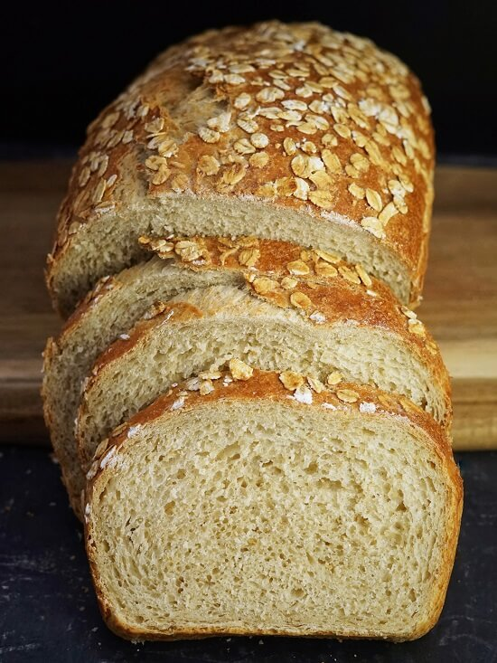

Oat Bread

Description
Ever wanted some bread to have with soup, or to simply snack on but have an
empty pantry? Well boy, do we have good news for you - this delicious bread
requires close to nothing to make - just a little bit of time! This classic
bread recipe will leave you satisfied and allows you to make your favorite
sandwiches, snacks and more without needing to take a trip to the store for
more bread. And it's homemade, meaning there are no nasty chemicals or additives
that you're bound to get in store bought bread. We'd say that's a win!
Ingredients
- 1/2 tsp salt
- 3 cups flour
- 1 cup rolled oats
- 2 1/2 tsp dry active yeast
- 2 cups water
- Nonstick spray oil, or coconut oil
Steps
- Mix dry ingredients together in a large mixing bowl.
- Add water and stir until the mixture has a doughy consistency.
- Cover the bowl with a lid, towel or plastic wrap and let rise for 2 hours.
- Remove covering and lay the dough onto a clean, floured, flat surface.
Begin to work the dough and fold (knead) it over about 12-15 times.
- Place dough back in bowl and recover for another 45 minutes for a final rise.
- Heat oven to 375 degrees F.
- Generously oil a bread pan and place bread dough to fill the pan.
- Place pan in the oven and bake for about 30 minutes, checking every 10 minutes
with a knife by stabbing the loaf and seeing if any dough comes out on the knife.
The bread is done when no more dough (or close to none) comes out on the knife.
- Remove the bread from the oven and let rest for about 30 minutes.
- Slice bread and enjoy!
Note: A good way to preserve the softness of the bread
is to cover it quickly after slicing with aluminum foil or plastic wrap. Keep
stored in a refrigerator for maximum freshness and longevity.
PS:
Homemade bread lacks the preservatives that storebought bread has. While this is
probably a good thing for your health, it will cause the bread to spoil pretty
quickly. That is why we recommend following the storage directions described previously!